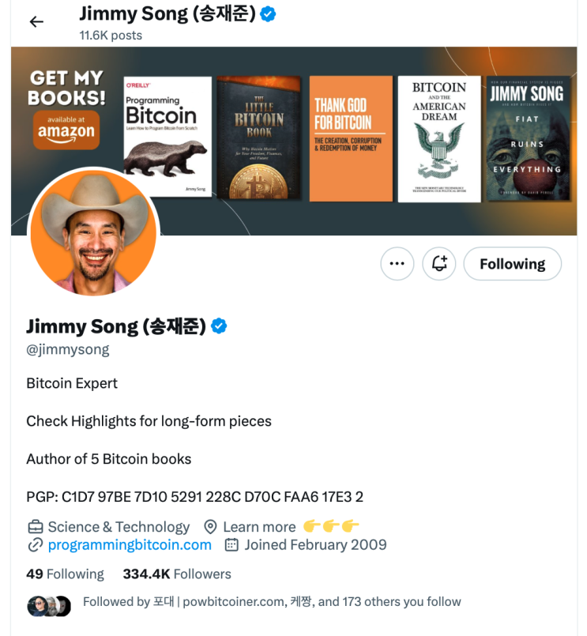
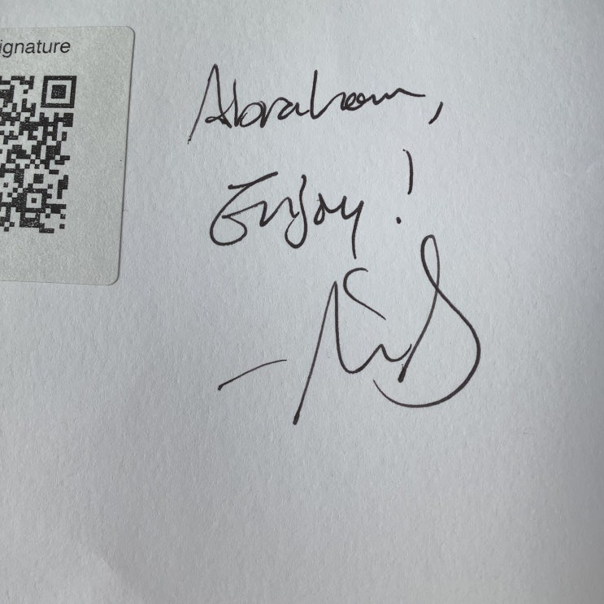
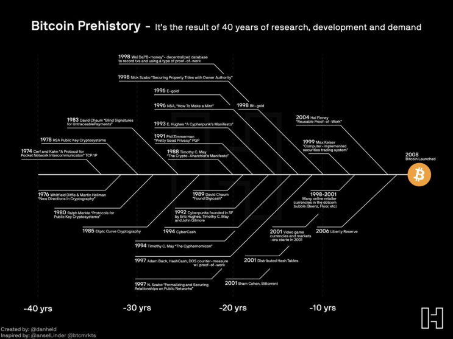
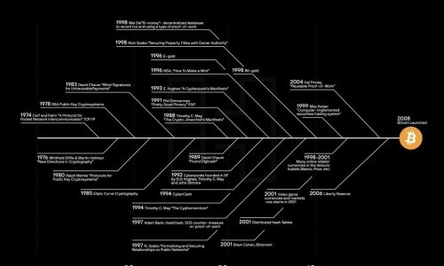

얼마전 비트코인 컨퍼런스에서 폐막 연사로 나왔던 선배 비트코이너인 지미송으로부터 직접 구입한 책을 읽어보았다.
X의 Jimmy Song (송재준)님(@jimmysong)
Bitcoin Expert Check Highlights for long-form pieces Author of 5 Bitcoin books PGP: C1D7 97BE 7D10 5291
228C D70C FAA6 17E3 2

어릴 적 미국으로 이민을 가셨다고 한다

써비스로 아조씨의 영어 이름인 Abraham Jotsee （줄이면 A.Jotsee가 된다) 를 적어주심
당시 아무런 생각없이 옥상에 있는 라이트닝 마켓을 구경하다가 예상치도 못하게 지미쏭님이 원래 판매 시간이 아닌 다른
시간에 갑자기 등장, 운 좋게 아조씨 혼자 책 사면서 한참을 이야기 할 기회가 있었다.
암튼 그래서 기억에 많이 남는 책.
책 내용은 비트코인의 기술적 내용보다는 비트코인이 가지는 사상적 측면에 대해서 다루고 있다. 특히 비트코인의 여러 사
상적 측면 중 '자유'와 '인권'이 라는 주제에 대해 주로 다루고 있으며 비트코인을 정부의 부당한 억압과 탐욕스러운 기업
들의 무분별한 사생활 침해에 대항하고 자신이 힘들게 모은 부에 대한 경제적 주권을 지키는 핵심적인 기술/무기로 소개하
고 있다. 또한 비트코인 스탠다드라고 할 만한 비트코인으로 인해 변화된 미래에 대한 상상도 그리고 있다.
직전에 읽었던 '사이퍼 펑크'가 암호화 기술이 '자유'와 '인권'을 지킬 수 있는 핵심 기술임을 설명했는데, 이 책에서는 좀
더 구체적으로 비트코인이 이러한 '자유'와 '인권'을 지킬 수 있는 솔루션임을 더 뚜렷하게 주장하는 편이다.
하긴 비트코인의 기술적 기반이 애초에 암호화 기술로 만들어진 것이고, 기존 사이퍼펑크들이 만든 전자 화폐 시스템을 기
반으로 하여 만들어진 것이기 때문에 당연이 책 '사이퍼 펑크'와 이 책 'TLBB' 의 맥락이 상통할 수 밖에 없을 것이다.

출처: 아토믹 비트코인님 웹사이트
https://atomicbtc.notion.site/
c719acd203ab417abbac1bd8a1016619?v=c3d0ab5a5f74466fb697bbc0da8b4c8c&p=25886a18969f434d9116200997452989&pm=c

X의 ATOMIC???ITCOIN님(@atomicBTC)
[#bitcoin prehistory] 비트코인 탄생의 역사 등장인물: @halfin @adam3us @maxkeiser @NickSzabo4 @NSAGov
출처 : @danheld
twitter.com
책 자체는 분량이 매우 짧다.
영어 단어는 약간 생소한 단어들이 나오긴 하지만 그래도 어려운 기술적인 내용은 나오지 않으니 대략 그 뜻들을 유추하면
서 쭉쭉 읽을 수 있는 수준이다.
그래서 영어 원서긴 하지만 가벼운 마음으로 읽을 수 있었던 책이었다 (덩달아 새 단어들도 공부좀 하고).
아쉽게도 한글판은 아직 없는 책이다.
누군가가 번역을 하고 있다고 들었던 것 같은데 한글판이 나오거든 블로그에 한번 기록을 해 보겠다 (사토시 마켓에서도
판매가 가능해질까?)
책에서 여러 좋았던 부분이 있지만 하나만 뽑자면 비트코인이 사회에 녹아들어가는 과정을 설명한 부분이다. 이 부분으로
서평 포스팅을 마무리 하고자 한다.
아마 대부분의 사람들은 망상이라고 생각하겠지만 세상의 누군가는 이런 것을 매우 논리적이라고 생각하고 이렇게 실현될
것으로 믿는다.
나같은 사람들 말이다.
Phase 1: Store of Value
The first step of Bitcoin adoption will be as a store of value.
This is the stage in which savers all over the world protect themselves against the inflation of their
local governments. This is happening today not just in hyperinflated economies like those of
Venezuela and Zimbabwe, but also in places like the United States and Europe where bitcoin has,
over multi-year stretches, outperformed the local fiat currency.
Late in the Store of Value phase,
pension funds and mainstream financial institutions will start adding bitcoin to their portfolios, and
still later, governments will start to add bitcoin to their reserves.
Adoption during this phase will grow slowly and organically as people realize its benefits.
Phase 2: Method of Payment
When enough merchants realize that non-bitcoin money is in fact an inferior store of value, they'll
want to be paid in bitcoin.
This is akin to black-market merchants in Venezuela who refuse bolivars and demand US dollars. As
more merchants, entrepre-neurs, and employees come to prefer bitcoin, the demand for bitcoin will
rise in the same way that the demand for US dollars skyrocketed following the introduction of the
Bretton Woods gold convertibility system.
This won't happen initially in advanced economies like that of the United States, but instead in
broken economies with wild inflation and intractable corruption. These societies will likely be ruled
by oppressive regimes that diminish the usefulness of easily confiscated stores of value like USD
notes and gold.
People in such places will use bitcoin to evade seizure of their wealth, and if necessary, to escape
entirely.
In this phase, well-designed software, quicker settlement technologies, improved infrastructure, and
privacy innovations will come to the forefront. Bitcoin users will be able to conduct transactions
instantly and privately, making surveillance much harder.
Phase 3: Unit of Account
As more people hold and earn bitcoin instead of their local currency, goods and services will start
being priced in their absolute bitcoin price instead of the local currency or the USD.
At this point, there will be lucrative arbitrage opportunities, whereby taking out loans in rapidly
depreciating currencies and converting them to bitcoin will become profitable.
This will be the beginning of hyperbitcoinization, where the USD and CNY will lose their privileged
positions and bitcoin will become the world settlement currency. This, in turn, will cause
hyperinflation on the part of most other currencies as loans will be very expensive to prevent
arbitrage. As Bitcoin will be the most desirable place to store value, the positive feedback loop will
cause many other currencies to depreciate substantially.
(위 내용을 기계-chatGPT로 번역한 내용이다)
**1단계: 가치 저장소**
비트코인 채택의 첫 번째 단계는 가치 저장소로서의 역할입니다.
이 단계에서는 전 세계의 저축자들이 자국 정부의 인플레이션으로부터 자신을 보호하기 위해 비트코인을 사용
합니다. 이는 베네수엘라와 짐바브웨와 같은 초인플레이션 경제뿐만 아니라 미국과 유럽과 같은 곳에서도 일어
나고 있습니다. 비트코인은 여러 해에 걸쳐 현지 법정 통화보다 더 높은 성과를 보여주었습니다.
가치 저장소 단
계의 후반에는 연금 기금 및 주요 금융 기관들이 비트코인을 포트폴리오에 추가하기 시작하고, 그 이후에는 정
부들도 비트코인을 준비금으로 추가하기 시작할 것입니다
.
이 단계 동안 채택은 사람들이 비트코인의 이점을 깨닫게 됨에 따라 천천히 그리고 유기적으로 성장할 것입니
다.
**2단계: 결제 수단**
충분한 수의 상인들이 비트코인이 아닌 돈이 사실상 열등한 가치 저장소라는 것을 깨닫게 되면, 그들은 비트코
인으로 결제받기를 원할 것입니다.
이것은 베네수엘라의 암시장 상인들이 볼리바르를 거부하고 미국 달러를 요구하는 것과 유사합니다. 더 많은 상
인, 기업가 및 직원들이 비트코인을 선호하게 되면 비트코인에 대한 수요는 브레튼 우즈 금 태환 제도 도입 이후
미국 달러에 대한 수요가 급증한 것과 같은 방식으로 증가할 것입니다.
이는 초기에는 미국과 같은 선진 경제국에서 일어나지 않을 것이며, 대신 야생 인플레이션과 해결할 수 없는 부
패로 고통받는 파탄된 경제에서 발생할 것입니다. 이러한 사회는 쉽게 압류할 수 있는 가치 저장소(USD 지폐 및
금)들의 유용성을 감소시키는 억압적인 정권에 의해 통치될 가능성이 높습니다.
그런 곳의 사람들은 비트코인을 사용하여 재산 압류를 피하고, 필요할 경우 완전히 탈출할 것입니다.
이 단계에서는 잘 설계된 소프트웨어, 더 빠른 결제 기술, 개선된 인프라 및 프라이버시 혁신이 부각될 것입니
다. 비트코인 사용자는 즉시 및 비공개로 거래를 할 수 있어 감시가 훨씬 더 어려워질 것입니다.
**3단계: 회계 단위**
더 많은 사람들이 자국 통화 대신 비트코인을 보유하고 벌게 되면, 상품과 서비스의 가격이 현지 통화나 미국 달
러 대신 절대적인 비트코인 가격으로 책정되기 시작할 것입니다.
이 시점에서, 급속히 가치가 떨어지는 통화로 대출을 받고 이를 비트코인으로 변환하는 것이 수익성이 높은 차
익 거래 기회가 될 것입니다.
이것이 하이퍼비트코인화의 시작이 될 것이며, 미국 달러와 중국 위안화는 특권적 지위를 잃고 비트코인이 세계
결제 통화가 될 것입니다. 이는 대부분의 다른 통화에서 초인플레이션을 유발할 것이며, 차익 거래를 방지하기
위해 대출이 매우 비싸질 것입니다. 비트코인이 가장 바람직한 가치 저장소가 될 것이므로, 긍정적 피드백 루프
는 다른 많은 통화의 가치를 상당히 떨어뜨릴 것입니다.
끝.